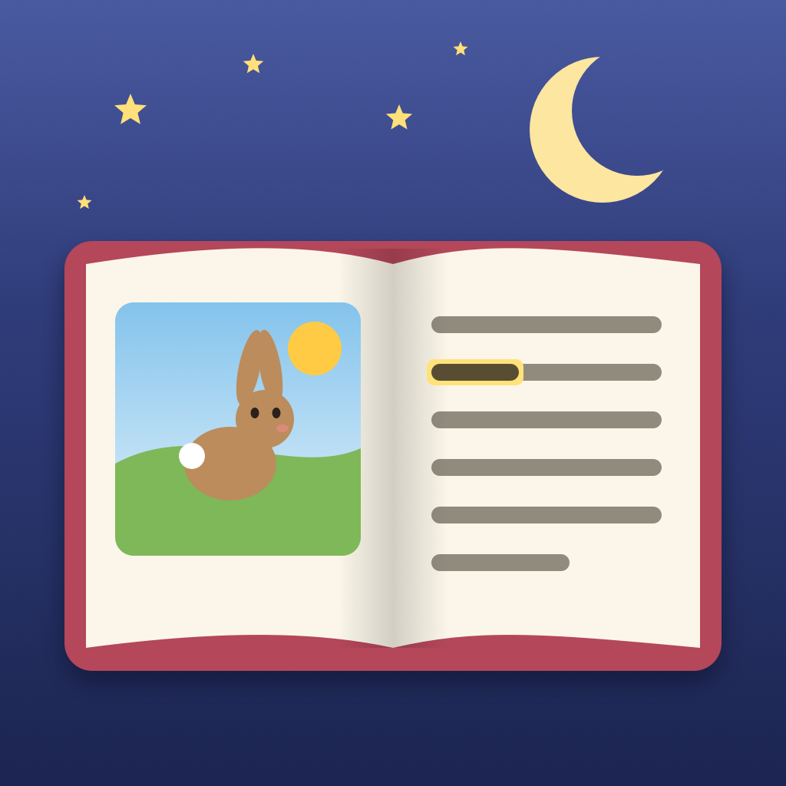

Storybook SpreadSupport
Answers to common questions are below. If yours isn’t, email help@fitztoppicks.com with your device model and iOS or iPadOS version.
Reading
How do I see two pages at once?
Turn your iPhone or iPad sideways. Wide screens show a two-page spread with a page that curls as you turn it; upright, you see one page at a time, and the same page stays in view when you turn.
How does read-aloud work?
Tap the speaker button. Each word is highlighted as it’s read, and the page can turn by itself. A grown-up can choose the voice, speed and highlighting in Settings. For nicer voices, download one marked Enhanced or Premium in Settings › Accessibility › Spoken Content › Voices; the app picks it up.
What is bedtime mode?
The moon button makes the colors warmer and dimmer and starts a sleep timer. When it ends, reading stops and the app says “Sleep tight”.
Which stories are in Spanish?
The three free stories read in Spanish too (our own translations), and the whole app is in Spanish when your device is.
Grown-ups
What is the grown-ups question?
A multiplication written in words (“What is seven times eight?”) answered in digits. It comes before buying, Settings, importing and any link that leaves the app.
How do I add our own books?
Under Your books, tap Add your own book, answer the grown-ups question and pick a PDF or EPUB from the Files app. Books with copy protection (DRM) can’t be opened.
Where do the stories come from?
All ten are US public-domain texts first published before 1930, adapted for young readers, with pictures drawn for this app. Settings › Where the stories come from lists each source and edition.
What’s free?
Three stories and one imported book. All Stories is one purchase with no subscription that adds the other seven stories and any number of your own books. Family Sharing is on.
Purchases
How do I get a refund?
Apple handles App Store refunds. Request one at reportaproblem.apple.com.
Do I have to pay again on another iPhone or iPad?
No. Sign in with the same Apple Account, open Settings in the app and tap Restore Purchase.